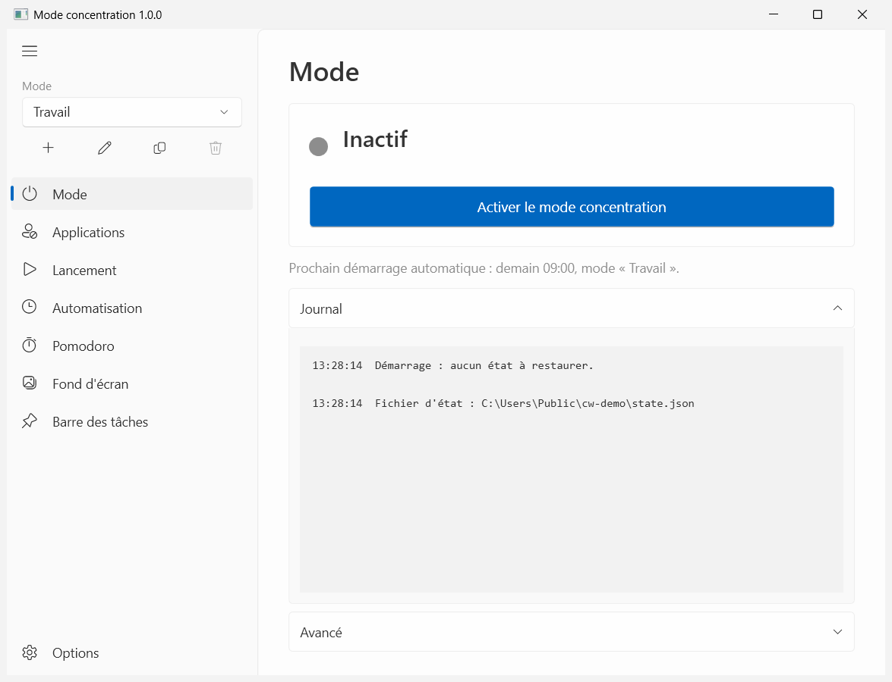
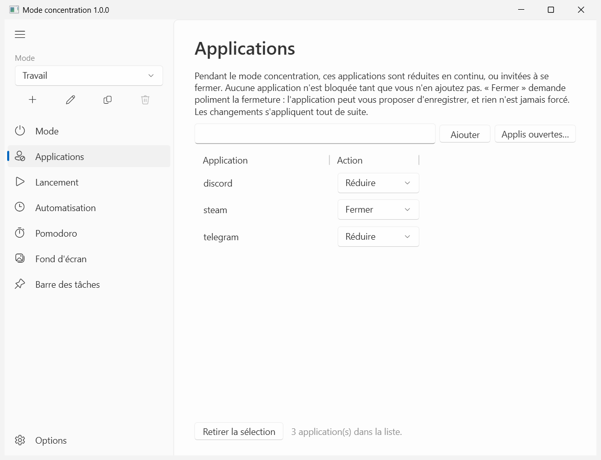
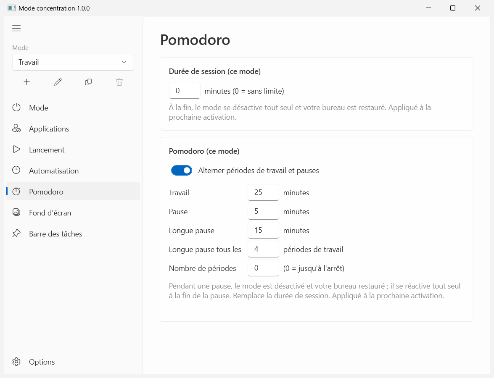
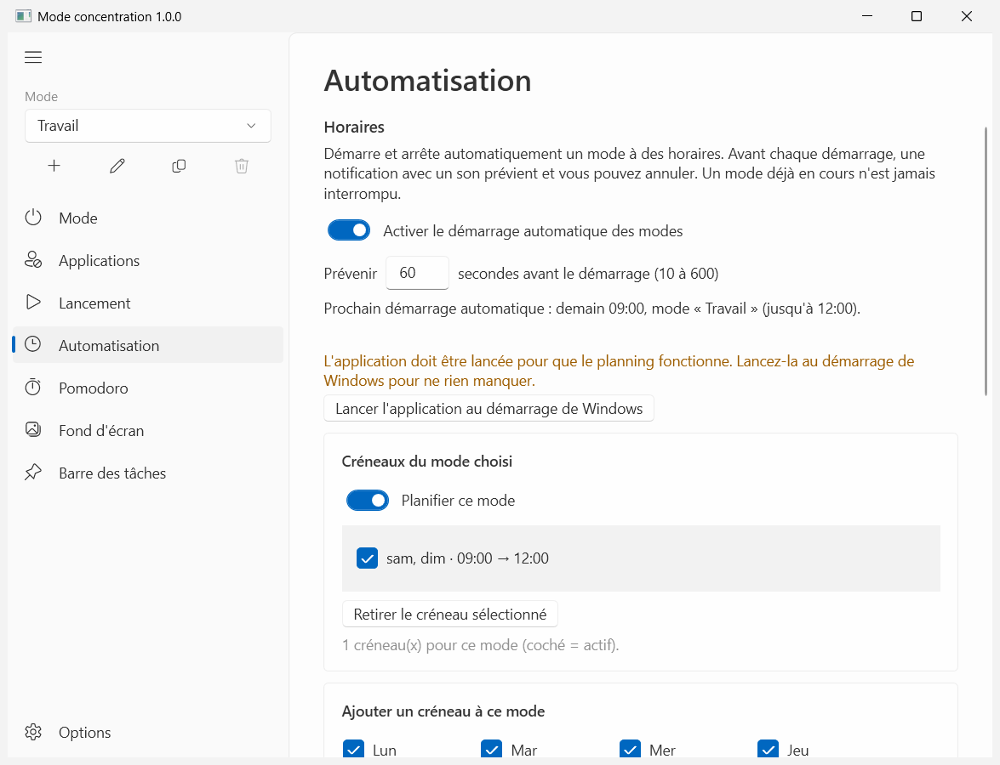

Applications
Les applications qui vous distraient sont réduites, ou fermées poliment : vous pouvez toujours enregistrer. Elles reviennent à la fin.
LockDesk met de côté les applications et les sites qui vous distraient, change votre fond d'écran et place vos fenêtres. Quand vous avez fini, votre PC retrouve exactement son état d'origine.

Un bouton, un raccourci ou un horaire : votre PC passe en mode concentration.
Fond d'écran, fenêtres, applications : tout revient exactement comme avant.
Vos modes et vos statistiques restent sur votre PC. Ni publicité, ni traçage.
Chaque mode réunit vos réglages : vous passez d'un « Travail » à une « Étude » sans rien reconfigurer.
Les applications qui vous distraient sont réduites, ou fermées poliment : vous pouvez toujours enregistrer. Elles reviennent à la fin.
Vidéos, réseaux sociaux, actualités : bloqués pendant le mode dans les navigateurs qui suivent les réglages de Windows (testé avec Chrome et Opera GX), sans extension.
Une image apaisante ou un fond uni pendant le mode. Votre fond d'origine revient à la fin, à l'identique.
Chaque fenêtre à sa place, au pixel près, sur l'écran de votre choix. Un bouton capture votre disposition actuelle.
25 minutes de travail, 5 de pause : la pause libère votre bureau, la reprise le remet en mode concentration toute seule.
Le lundi à 9 h, ou dès que vous ouvrez votre logiciel de travail. Toujours annoncé à l'avance, toujours annulable.
Travail, Étude, Écriture… Chaque mode a son icône, ses applications, ses sites, sa disposition et son fond d'écran.
Votre temps de concentration par jour et par semaine, votre série de jours et votre objectif quotidien. Calculé sur votre PC.
Une petite pastille, comme celle du volume de Windows 11, vous dit ce qui se passe : mode activé, pause, fin proche.
Les applications utiles à votre travail s'ouvrent d'elles-mêmes quand le mode démarre.
Ctrl + Alt + F active ou désactive le mode depuis n'importe où (modifiable).
Les bannières de notification de Windows se taisent le temps du mode, puis reprennent comme avant.
Thème clair ou sombre, comme votre système. Tout se règle en quelques clics, mode par mode.



C'est la règle de base de l'application : rien n'est changé avant que l'état d'origine soit sauvegardé. Et rien ne peut empêcher de le remettre.
Un zip qui contient un seul fichier, ou un installateur : au choix.
Choisissez les applications et les sites à écarter, un fond d'écran, la place de vos fenêtres.
Un clic, ou Ctrl + Alt + F. Un autre clic, et votre PC redevient comme avant.
Non. L'application n'a besoin d'aucun compte, ne se connecte à Internet pour rien et n'envoie rien. Vos modes, vos réglages et vos statistiques restent sur votre PC.
Sur Windows 11, avec un processeur Intel ou AMD (x64) ou un processeur ARM (ARM64). Windows 10 n'est pas pris en charge.
L'application n'est pas encore signée numériquement, et Windows se méfie des programmes qu'il voit peu. Cliquez sur Informations complémentaires, puis sur Exécuter quand même.
Non. Elle regarde seulement quelles fenêtres sont ouvertes, pour mettre de côté celles de votre liste. Vos modes, vos réglages et vos statistiques restent sur votre PC.
Écrivez-moi (adresse sur la page Aide) en disant ce que vous faisiez et ce qui ne s'est pas passé comme prévu. Surtout si votre bureau n'est pas revenu comme avant : c'est ce que je cherche à vérifier en priorité.
Toutes les réponses, et comment nous écrire, sont sur la page Aide.
Une version bêta, pour Windows 11. Vos retours m'aident à l'améliorer, et votre bureau revient toujours comme avant.
Télécharger la bêta